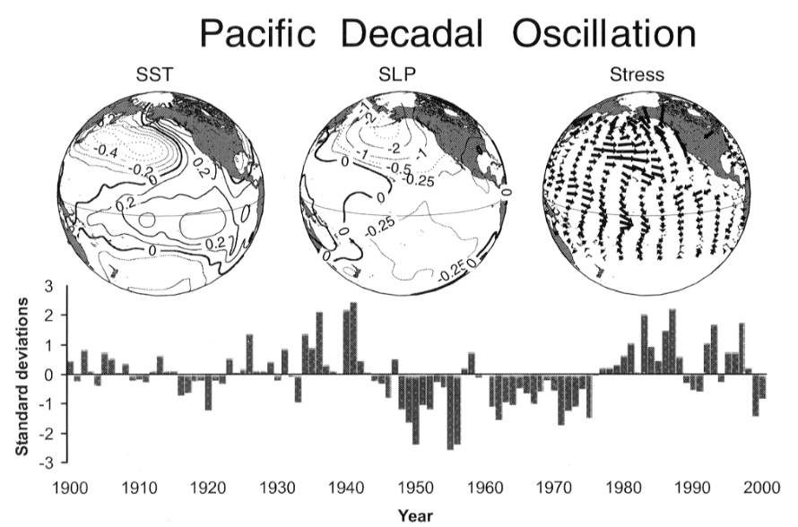
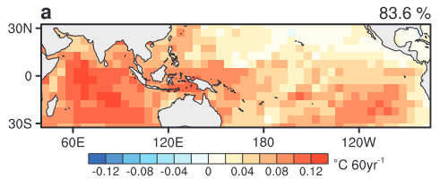
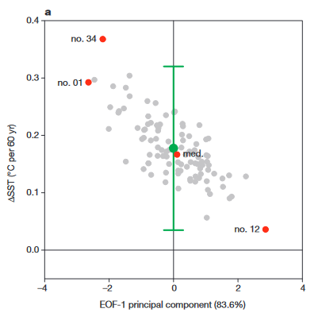
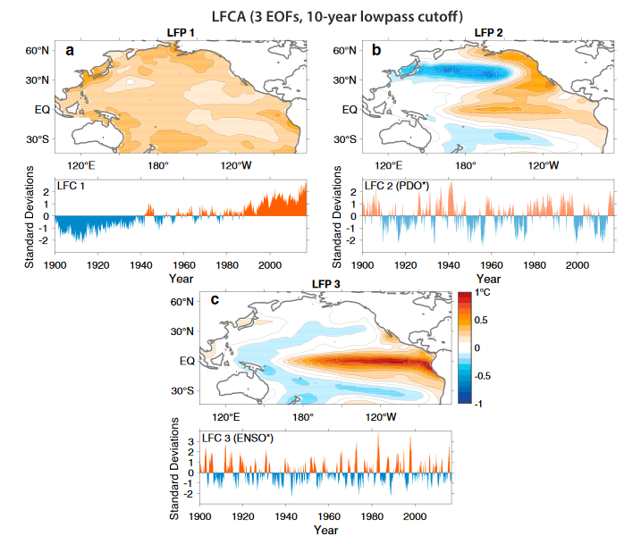
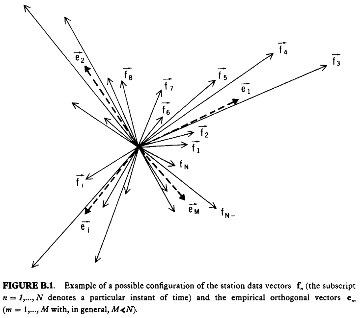

Introduction to EOFs
Overview
In this notebook, we will provide some background on empirical orthogonal functions (EOFs), develop some intuition, and cover the relevant mathematics.
Prerequisites
Concepts |
Importance |
Notes |
|---|---|---|
Linear algebra |
Necessary |
Time to learn: 20 minutes
Imports
N/A
Introduction
EOFs are commonly used to study the spatial and temporal variability of geophysical fields like sea surface temperature, sea level pressure, or geopotential height. Similar to how Fourier analysis allows us to decompose a time series into a sum of sinusoids of different frequencies, EOF analysis allows us to decompose a geophysical field into a set of mutually orthogonal spatial patterns and corresponding time series that are determined by the data (so, empirically). Terminology varies across texts, but here we will refer to the spatial patterns as “EOFs” and the time series as the “principal components” (PCs).
Each EOF-PC pair can be thought of as a mode of variability in the data, but it is not necessary that these modes represent something physical. Each mode comes with a corresponding variance fraction that tells us how important the mode is. This is often phrased something like “the first mode explains 25% of the variance in the data,” and we will discuss what this means mathematically in the following sections. If a mode explains a large fraction of the total variance, it is more likely to be capturing some physical mode of variability, like the El Niño Southern Oscillation (ENSO) or North Atlantic Oscillation (NAO).
Examples of use
EOF analysis (also called principal component analysis, PCA) has been applied to meteorological and oceanographic data since the 1940s and 1970s, respectively (Preisendorfer 1988). Here are a few examples of its use:
Identifying climate modes: the Pacific Decadal Oscillation
The Pacific Decadal Oscillation (PDO) is a mode of climate variability characterized by decadal-scale sea surface temperature (SST) anomalies in the North Pacific. As typically defined, the positive/warm phase of PDO occurs when the SSTs off the west coast of North America are anomalously warm and the eastern/interior North Pacific is anomalously cold (and vice versa for the negative/cold phase). Since its identification and naming in the 1990s, PDO has been defined as the leading (i.e., first) EOF in North Pacific SST anomalies (Mantua and Hare 2002). This is the same definition used by NOAA in their PDO index.
 |
|---|
Adapted from Mantua and Hare (2002). The three plots on the top show the EOFs for SST, sea level pressure, and surface wind stress, while the time series at the bottom is the associated PC. |
Besides the modes of variability already mentioned, an EOF analysis can also be used to identify the Northern and Southern Annular Modes (NAM and SAM), the Atlantic Multidecadal Oscillation/Variability (AMO/V), the zonal wave 3 pattern (ZW3) of both hemispheres, and others.
Identifying patterns across an ensemble
While an EOF analysis is usually applied to data that is a function of space and time, it can also be used with data that is a function of space and ensemble member. Then the analysis may be able to identify the most important patterns that characterize the differences between ensemble members. Tokinaga et al. (2012) perform an EOF analysis on an ensemble of 100 realizations of observed SSTs in order to understand the uncertainty in the zonal SST gradient in the tropical Pacific.
 |
|---|
Adapted from Tokinaga et al. (2012). The left plot shows the leading EOF (with 83.6% variance fraction) of tropical Pacific SST across 100 realizations of observed SSTs. The right plot shows the PC (in this case, a single value instead of a time series) associated with the EOF plotted against the zonal SST gradient in the tropical Pacific for each ensemble member. |
Isolating the global warming signal
To isolate the global warming signal from internal variability, it is common to run a climate model multiple times—with the same anthropogenic emissions and slightly different initial conditions—and take the average response across the ensemble. With enough ensemble members, the internal variability should mostly cancel out, identifying the ensemble average with the model’s response to the emissions. Unfortunately, we cannot use this method on Earth’s actual climate, which only has one realization. As you will see in Finding Climate Modes with EOFs, the long-term warming trend will be apparent in an EOF analysis of observed SSTs if the data is not detrended, but it is not cleanly separated from internal variability. Wills et al. (2018) develop a method, which they call low-frequency component analysis (LFCA), that can more cleanly separate out the warming trend. After perfoming an EOF analysis, their method finds a linear combination of the EOFs that maximizes the variance fraction at low frequencies (see their paper for more details).
 |
|---|
Adapted from Wills et al. (2018). Three leading low frequency patterns (LFPs, similar to EOFs) and their corresponding low frequency components (LFCs, similar to PCs) for Pacific SST anomalies. This method is able to separate the global warming trend from PDO and ENSO. |
The method
The steps required to compute EOFs and PCs are as follows:
Organize your data into a 2-dimensional matrix \(\mathbf F\) and remove the mean from each time series
Calculate the covariance matrix \(\mathbf R=\mathbf F\mathbf F^\mathrm T\)
Find the eigenvectors (EOFs) \(\mathbf e_m\in\mathbf E\) and eigenvalues \(\lambda_m\in\mathbf\Lambda\) of \(\mathbf R\) by solving \(\mathbf R\mathbf E=\mathbf\Lambda\mathbf E\)
Order the eigenvectors by their eigenvalues, since the eigenvalues are proportional to the fraction of variance explained by that mode
Calculate the PCs for each mode with \(\mathbf c_m=\mathbf e_m^\mathrm T\cdot\mathbf F\) (i.e. projecting your data onto each eigenvector/EOF)
Find the variance fraction for each mode with \(\lambda_m\Large/\normalsize\sum_i^M\lambda_i\)
Deriving the eigenvalue problem
As an aside, it is not obvious why solving the eigenvalue problem for the covariance matrix results in spatial patterns that align well with the data. The following explanation follows those given by Preisendorfer (1988), Peixoto et al. (1992), and Björnsson and Venegas (1997).
Let \(f(x, t)\) be a geophysical field recorded over locations \(x_1, x_2, \dots, x_M\) and times \(t_1, t_2, \dots, t_N\). In matrix notation, we can write each map of \(M\) locations as the column vector \(\mathbf{f}_n=\begin{bmatrix}f_{1n} & f_{2n} & \cdots & f_{Mn}\end{bmatrix}^\mathrm T\), where \(n=1, \dots, N\). We then have an \(M\times N\) matrix that can be written as \(\mathbf F=\begin{bmatrix}\mathbf{f}_1 & \mathbf{f}_2 & \cdots & \mathbf{f}_N\end{bmatrix}\).
Now, imagine that we only have three locations to collect data. Then each \(\mathbf{f}_n\) would be a 3-dimensional vector, and the whole set could be represented as a linear combination of three arbitrary basis vectors. This generalizes such that the vector space \(\mathbf F\) is spanned by an arbirary unit basis \(\{\mathbf u_1,\mathbf u_2,\dots,\mathbf u_M\}\). It is very likely that some of the vectors \(\mathbf f_n\) are correlated as a result of some physical process. The goal of the EOF analysis is then to find an orthogonal unit basis \(\{\mathbf e_1,\mathbf e_2,\dots,\mathbf e_M\}\) that aligns well with these vector “clusters”.
 |
|---|
Adapted from Peixoto et al. (1992). |
This is now an optimization problem. To maximize the alignment between the basis and observations, we will maximize the projection of the vectors \(\mathbf f_n\) onto each basis vector using the sum of squares:
for \(m=1, 2, \dots, M\). We also require mutual orthonormality for the basis: \(\mathbf e_i\cdot\mathbf e_j=\delta_{ij}\). Now, let’s define this quantity as \(\psi(\mathbf e_m)\):
where \(\mathbf R=\mathbf F\mathbf F^\mathrm T\) is the covariance matrix of \(\mathbf F\).
We now seek the extrema of \(\psi(\mathbf e)\) (dropping the subscript \(m\) for convenience), which satisfy \(\psi(\mathbf e+\delta\mathbf e)=\psi(\mathbf e)\) for a small change \(\delta\mathbf e\) in the direction of \(\mathbf e\). Then
where we only keep the terms first order in \(\delta\mathbf e\). The optimization condition implies
By the orthonormality of the basis, we also require that these variations only change the direction of \(\mathbf e\), so \((\mathbf e+\delta\mathbf e)^\mathrm T(\mathbf e+\delta\mathbf e)=1\Rightarrow(\delta\mathbf e)^\mathrm T\mathbf e=0\), again only keeping terms first order in \(\delta\mathbf e\). We can combine these two conditions, provided that we multiply the orthonormality condition by a constant that has the same units as the entries of \(\mathbf R\):
Since \(\delta\mathbf e\) is arbitrary, we must have \(\mathbf R\mathbf e-\lambda\mathbf e=0\), the eigenvalue problem for \(\mathbf R\), or for nontrivial solutions, \(|\mathbf R-\lambda\mathbf I|=0\).
Summary
In this notebook, we covered some background on EOFs, the steps required to carry out an EOF analysis, and some of the math behind the analysis.
What’s next?
In the next notebook, we will use a package called xeofs to find climate modes in SST data.
Resources and references
Björnsson, H., & Venegas, S. A. (1997). A manual for EOF and SVD analyses of climatic data. CCGCR Report, 97(1), 112-134.
Mantua, N. J., & Hare, S. R. (2002). The Pacific Decadal Oscillation. Journal of Oceanography, 58, 35-44.
Peixoto, J. P., Oort, A. H., & Lorenz, E. N. (1992). Physics of climate (Vol. 520). New York: American Institute of Physics.
Preisendorfer, R. Ä. N. Ü. (1988). Principal component analysis in meteorology and oceanography. Elsevier Sci. Publ., 17, 425.
Tokinaga, H., Xie, S. P., Deser, C., Kosaka, Y., & Okumura, Y. M. (2012). Slowdown of the Walker circulation driven by tropical Indo-Pacific warming. Nature, 491(7424), 439-443.
Wills, R. C., Schneider, T., Wallace, J. M., Battisti, D. S., & Hartmann, D. L. (2018). Disentangling global warming, multidecadal variability, and El Niño in Pacific temperatures. Geophysical Research Letters, 45(5), 2487-2496.